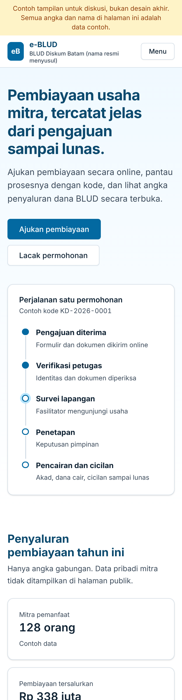
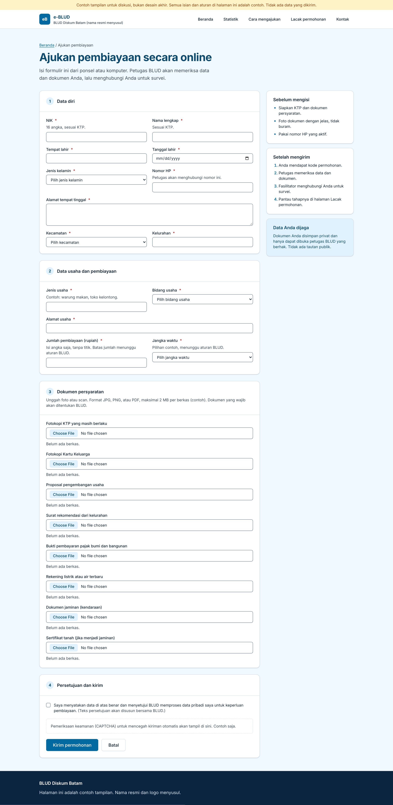
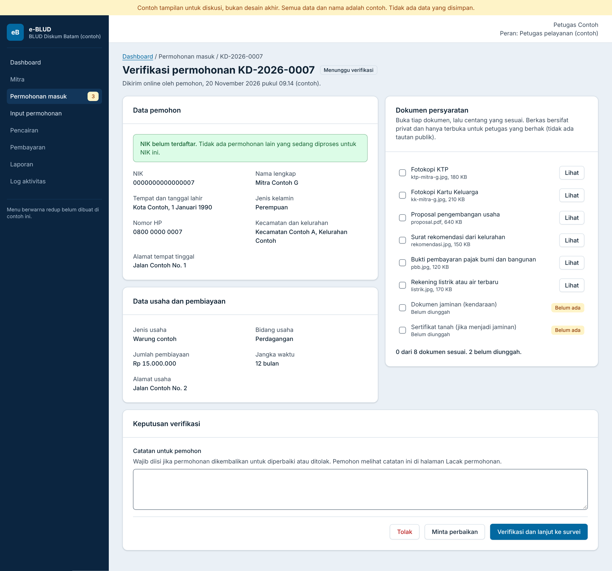
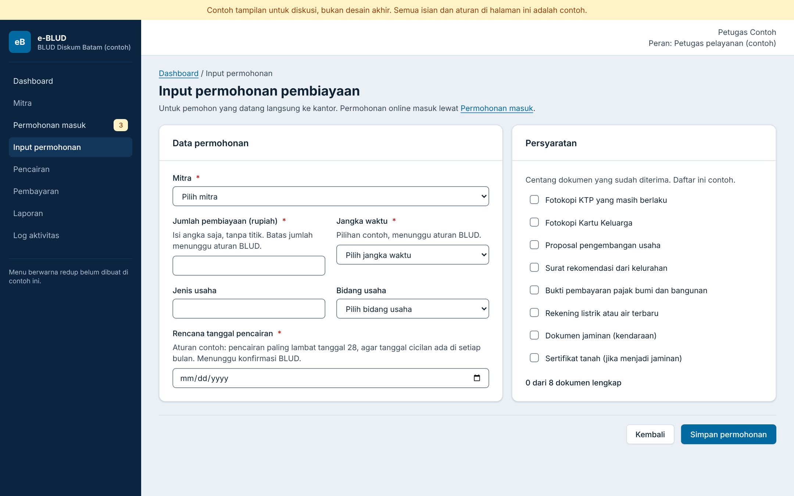

e-BLUD
Sistem digital untuk BLUD Diskum Batam: rancangan kebutuhan dan contoh tampilan
Pratinjau untuk diskusi, draft v0Disiapkan 20 November 2026. Dokumen ini bukan penawaran dan bukan desain akhir. Penawaran harga akan disampaikan secara terpisah.
Gambaran singkat
Dari Excel ke satu sistem
Masalah sekarang
- Pencatatan masih manual di lembar Excel.
- Data mudah ganda atau berbeda versi.
- Mencari status pencairan dan cicilan memakan waktu.
- Laporan lambat dibuat, dan sulit diketahui siapa mengubah apa.
Yang kami usulkan
- Satu sistem dari permohonan sampai lunas.
- Situs publik yang modern, tempat mitra mengajukan sendiri.
- Situs petugas untuk memverifikasi, mencairkan, dan mencatat cicilan.
- Aturan pembiayaan dicek otomatis.
Yang diharapkan
- Rekap pencairan dan cicilan dalam hitungan menit.
- Data diketik sekali, tidak dua kali.
- Setiap perubahan dapat ditelusuri ke satu pengguna.
- Dashboard untuk pimpinan.
Yang perlu diperhatikan
- Alur kerja di sini mengikuti contoh sistem dari Dinas lain. Semuanya masih asumsi dan perlu dikoreksi sesuai cara kerja BLUD Diskum Batam.
- Semua angka, nama, dan tampilan adalah contoh. Nama resmi dan logo BLUD akan menyusul.
- Mitra mengajukan sendiri lewat formulir online tanpa akun. Ini juga masih perlu dikonfirmasi.
Yang paling ingin kami ketahui dari Bapak dan Ibu
- Bagaimana pembiayaan berjalan sekarang di Excel, dari mitra mengajukan sampai lunas, dan siapa mengerjakan tiap langkah.
- Aturan pembiayaan yang berlaku: batas jumlah, jasa, jangka waktu, agunan, dan denda.
- Peran petugas yang ada, dan laporan yang benar-benar dipakai.
Alur contoh
Perjalanan satu permohonan
Dari formulir online sampai lunas. Peran dan langkah di bawah ini asumsi sampai dikonfirmasi BLUD. Pemohon yang datang langsung diinput petugas (F3).
-
Mitra mengisi formulir online
PemohonF3, F13
Data diri, data usaha, dan dokumen diunggah. Tanpa membuat akun.
-
Mendapat kode permohonan
SistemF3, F14
Status awal: Menunggu verifikasi. Kode dipakai untuk melacak tahap.
-
Petugas memverifikasi
Petugas pelayananF2, F3
Cek identitas dan dokumen. Lanjut ke survei, minta perbaikan, atau tolak dengan catatan.
-
Survei lapangan
FasilitatorF4
Kunjungan ke usaha pemohon. Hasil survei tercatat pada permohonan.
-
Penetapan dan pencairan
PimpinanF5, F6
Aturan pembiayaan dicek otomatis, lalu akad dan pencairan dicatat.
-
Cicilan dan pembayaran
Bendahara atau kasirF7, F11
Jadwal cicilan dibuat otomatis. Pembayaran dicatat dan kwitansi dicetak.
-
Lunas
SistemF8, F9, F12
Pelunasan tercatat. Pimpinan memantau lewat dashboard, dan setiap perubahan ada di log aktivitas.
Contoh layar 1 dari 5
Beranda situs publik
Fitur F13, F14
Halaman depan untuk masyarakat dan mitra: modern, berwarna biru muda, dan nyaman dibuka dari ponsel.

- Tombol Ajukan pembiayaan membuka formulir online (F3, F13).
- Perjalanan satu permohonan, supaya tahapnya jelas bagi pemohon.
- Angka gabungan penyaluran pembiayaan, tanpa data pribadi mitra (F13).
- Pemohon melacak tahap permohonan dengan kode (F14).
Contoh layar 2 dari 5
Formulir pengajuan online
Fitur F3, F13
Mitra mengajukan pembiayaan sendiri tanpa akun: mengisi data, mengunggah dokumen, dan menyetujui pemrosesan data pribadi.

- Pemohon mengisi data diri tanpa membuat akun (F3).
- Data usaha serta jumlah dan jangka waktu pembiayaan (F3).
- Dokumen persyaratan diunggah sebagai foto atau scan (F3).
- Dokumen disimpan privat dan hanya dibuka petugas yang berhak.
Contoh layar 3 dari 5
Dashboard petugas
Fitur F9, F7, F8
Halaman awal petugas setelah login (F1). Modern, tetapi tetap bergaya aplikasi pemerintahan: menu di samping, kartu angka, dan tabel.
- Pemberitahuan permohonan online yang menunggu verifikasi (F3).
- Kartu angka pencairan dan cicilan: hari ini, bulan ini, tahun ini (F9).
- Grafik dengan tabel data sebagai alternatif teks (F9).
- Daftar pinjaman dengan filter status (F7, F8).
Contoh layar 4 dari 5
Verifikasi permohonan masuk
Fitur F2, F3, F4
Permohonan online masuk ke petugas. Petugas memeriksa data dan dokumen sebelum permohonan diteruskan ke survei.

- Status permohonan: Menunggu verifikasi (F3).
- Data pemohon, dengan pemeriksaan NIK ganda (F2, F3).
- Petugas membuka tiap dokumen dan menandai yang sesuai (F3).
- Keputusan: lanjut survei, minta perbaikan, atau tolak dengan catatan (F3, F4).
Contoh layar 5 dari 5
Input permohonan langsung
Fitur F3, F5, F6
Untuk pemohon yang datang langsung ke kantor, petugas menginput permohonan. Aturan pembiayaan dicek saat disimpan.

- Petugas menginput permohonan untuk pemohon yang datang langsung (F3).
- Contoh aturan: tanggal pencairan paling lambat tanggal 28 (F5, F6).
- Daftar persyaratan dokumen yang diterima (F3).
- Simpan permohonan (F3).
Cakupan
14 fitur dalam satu pandangan
Nomor fitur sama di semua dokumen. Rincian dan kriteria penerimaan ada di lampiran.
- F1
Login dan peran
Petugas masuk dengan akun; hak akses sesuai peran. Mitra tidak perlu akun.
Admin
- F2
Data mitra
Data identitas dan foto mitra, hanya terlihat oleh yang berhak.
Admin
- F3
Permohonan pembiayaan
Diajukan online oleh mitra atau diinput petugas, lalu diverifikasi sebelum survei.
Admin dan publik
- F4
Survei dan analisa
Hasil survei fasilitator tercatat pada permohonan yang sama.
Admin
- F5
Penetapan dan validasi SOP
Pimpinan menetapkan; aturan pembiayaan dicek otomatis.
Admin
- F6
Akad dan pencairan
Nomor akad, tanggal realisasi, dan pencairan dana.
Admin
- F7
Jadwal cicilan dan pembayaran
Jadwal otomatis; pokok, jasa, dan denda dicatat.
Admin
- F8
Pelunasan dan penyesuaian
Pelunasan dipercepat dengan penyesuaian sisa jasa.
Admin
- F9
Dashboard
Angka pencairan dan cicilan, dua grafik, filter tanggal.
Admin
- F10
Laporan inti
Laporan per periode, dapat dicetak PDF dan Excel.
Admin
- F11
Cetak dokumen
Formulir, tanda terima, rincian biaya, dan kwitansi ber-QR.
Admin
- F12
Log aktivitas
Siapa mengubah apa dan kapan, tidak dapat diubah.
Admin
- F13
Situs publik
Informasi, statistik gabungan, dan formulir pengajuan.
Publik
- F14
Lacak permohonan
Pemohon melacak tahap permohonan dengan kode.
Publik
Selanjutnya
Langkah berikut
Bapak dan Ibu meninjau
Contoh tampilan dan daftar fitur. Tandai yang perlu diubah.
Kami memperbarui PRD
Sesuai masukan dan jawaban atas pertanyaan terbuka.
PRD disetujui
Persetujuan klien diperlukan sebelum tahap berikutnya.
Panduan lengkap dan penawaran
Panduan final disiapkan. Penawaran harga disampaikan terpisah.
Yang kami butuhkan dari BLUD
- Penjelasan alur kerja dan aturan pembiayaan yang berlaku.
- Contoh formulir dan lembar Excel yang dipakai sekarang.
- Nama resmi dan logo BLUD.
- Akun Google milik BLUD untuk penyimpanan dokumen.
- Daftar laporan yang benar-benar dipakai.
Pertanyaan terbuka
- Apakah mitra mengajukan sendiri tanpa akun?
- Bagaimana petugas memverifikasi identitas pemohon online?
- Dokumen mana yang wajib diunggah, dan batas ukuran berkas?
- Teks persetujuan data pribadi dan lama data disimpan.
- Daftar lengkap ada di bagian 9 lampiran.
Lampiran
Rancangan kebutuhan (PRD draft v0)
Tanggal: 19 November 2026 · Status: Draft v0
1. Masalah dan tujuan
Masalah. BLUD Diskum Batam memberikan pembiayaan kepada mitra, tetapi pencatatannya masih manual dengan lembar Excel. Akibatnya data mudah ganda atau berbeda versi, mencari status pencairan dan cicilan memakan waktu, laporan lambat dibuat, dan sulit diketahui siapa mengubah apa.
Tujuan.
- Seluruh proses pembiayaan, dari permohonan sampai lunas, tercatat di satu sistem.
- Data diinput sekali dan langsung terlihat oleh petugas yang berkepentingan.
- Aturan pembiayaan dicek otomatis oleh sistem (aturan Batam: lihat bagian 9).
- Pimpinan melihat angka pencairan dan cicilan di dashboard tanpa menunggu rekap.
- Masyarakat mendapat situs publik yang modern berisi informasi BLUD dan statistik ringkas.
- Mitra dapat mengajukan pembiayaan sendiri secara online, tanpa akun, lalu memantau prosesnya (Asumsi).
2. Pengguna
| Pengguna | Kebutuhan | Status |
|---|---|---|
| Admin | Mengelola akun, peran dan data master | (Asumsi) |
| Petugas pelayanan | Memverifikasi permohonan yang masuk online; menginput permohonan untuk pemohon yang datang langsung | (Asumsi) |
| Fasilitator lapangan | Mengisi hasil survei mitra | (Asumsi) |
| Pimpinan (Kasubag atau Kepala) | Menyetujui, mencairkan, memantau dashboard | (Asumsi) |
| Bendahara atau kasir | Mencatat pembayaran cicilan, mencetak kwitansi | (Asumsi) |
| Masyarakat dan mitra | Mengisi permohonan pembiayaan sendiri secara online tanpa akun, mengunggah dokumen persyaratan, melihat statistik, dan melacak permohonan dengan kode | (Asumsi) |
Peran sebenarnya di Diskum Batam belum diketahui.
3. Fitur
Dua tampilan: situs publik (modern) dan situs admin (modern, bergaya pemerintahan). Nomor F1–F14 dipakai di semua dokumen turunan.
| No | Fitur | Situs |
|---|---|---|
| F1 | Login dan peran | Admin |
| F2 | Data mitra | Admin |
| F3 | Permohonan pembiayaan | Admin |
| F4 | Survei dan analisa | Admin |
| F5 | Penetapan dan validasi SOP | Admin |
| F6 | Akad dan pencairan | Admin |
| F7 | Jadwal cicilan dan pembayaran | Admin |
| F8 | Pelunasan dan penyesuaian | Admin |
| F9 | Dashboard | Admin |
| F10 | Laporan inti | Admin |
| F11 | Cetak dokumen | Admin |
| F12 | Log aktivitas | Admin |
| F13 | Situs publik | Publik |
| F14 | Lacak permohonan | Publik |
4. Kebutuhan dan kriteria penerimaan per fitur
Alur di bawah ini adalah asumsi sampai dikonfirmasi klien.
Login dan peran
Pengguna (petugas) masuk dengan akun yang dibuat admin; hak akses mengikuti peran. Mitra tidak memerlukan akun.
- Given pengguna tanpa akun, when membuka halaman admin, then diarahkan ke login. Given peran petugas pelayanan, when membuka menu pencairan, then akses ditolak.
Data mitra
Simpan data identitas mitra (NIK, nama, alamat, kontak, foto, data rekening). Data berasal dari formulir online mitra (F3) atau diinput petugas, dan menjadi data mitra resmi setelah diverifikasi petugas. Foto dan data pribadi hanya terlihat oleh pengguna yang berhak.
- Given NIK sudah terdaftar, when petugas menambah mitra dengan NIK sama, then sistem menolak dan menampilkan data yang ada.
Permohonan pembiayaan
Permohonan masuk dengan dua cara: (a) mitra mengisi formulir di situs publik tanpa akun, berisi data diri, data usaha, jumlah dan jangka waktu pembiayaan, serta unggahan dokumen persyaratan (foto atau scan) (Asumsi); (b) petugas menginput untuk pemohon yang datang langsung (Asumsi). Pemohon menyetujui pemrosesan data pribadinya sebelum mengirim, dan formulir publik dilindungi dari kiriman otomatis (misalnya CAPTCHA, usulan). Setelah dikirim, sistem memberi kode permohonan dan status "Menunggu verifikasi". Petugas memeriksa identitas dan dokumen, lalu meneruskan ke survei (F4), meminta perbaikan, atau menolak dengan alasan wajib. Permohonan juga dapat dibatalkan dengan alasan wajib.
- Given formulir online belum lengkap, when dikirim, then sistem menunjukkan isian yang kurang dan tidak mengirim.
- Given formulir lengkap dan persetujuan dicentang, when dikirim, then tampil kode permohonan dan status "Menunggu verifikasi".
- Given NIK sudah punya permohonan yang masih diproses, when dikirim lagi, then sistem menolak dan menyarankan melacak permohonan yang ada.
- Given permohonan "Menunggu verifikasi", when petugas memverifikasi, then status menjadi "Siap survei" dan tercatat di log aktivitas (F12).
- Given dokumen yang diunggah, when dibuka, then hanya petugas yang berhak yang dapat melihatnya, dan tidak ada tautan publik.
Survei dan analisa
Fasilitator mengisi hasil survei (modal, target penjualan, keuntungan, rincian penggunaan dana) pada permohonan yang sama.
- Given permohonan belum disurvei, when pimpinan membuka penetapan, then sistem meminta survei diselesaikan dahulu.
Penetapan dan validasi SOP
Pimpinan menetapkan atau menolak. Sistem menolak nilai yang melanggar aturan (batas pembiayaan, nilai agunan).
- Given jumlah melebihi batas yang berlaku, when disimpan, then muncul pesan kesalahan yang menyebut aturan yang dilanggar. (Nilai aturan: bagian 9.)
Akad dan pencairan
Catat nomor akad, tanggal realisasi dan jatuh tempo, lalu cairkan. Aturan tanggal pencairan maksimal tanggal 28 (Asumsi).
- Given tanggal realisasi lebih dari batas, when disimpan, then ditolak dengan alasan.
Jadwal cicilan dan pembayaran
Sistem membuat jadwal cicilan otomatis; bendahara mencatat pembayaran pokok, jasa dan denda. Denda dihitung otomatis dengan kalender hari kerja (Asumsi).
- Given cicilan lewat jatuh tempo, when dibuka, then denda tampil sesuai aturan dan hari kerja.
Pelunasan dan penyesuaian
Pelunasan dipercepat dengan penyesuaian sisa jasa; status berubah menjadi Lunas.
- Given semua cicilan terbayar, when pembayaran terakhir disimpan, then status pinjaman otomatis Lunas.
Dashboard
Kartu angka (hari ini, bulan ini, tahun ini) untuk pencairan dan cicilan, jumlah mitra, serta dua grafik, dengan filter tanggal.
- Given data pencairan baru disimpan, when dashboard dibuka, then angka sudah ikut berubah tanpa input ulang.
Laporan inti
Laporan pencairan, cicilan, tunggakan, kolektibilitas dan pembiayaan lunas per periode, dapat dicetak PDF dan Excel. Daftar laporan final ditentukan klien.
- Given periode dipilih, when laporan dibuat, then totalnya sama dengan dashboard.
Cetak dokumen
Formulir permohonan, tanda terima berkas, rincian biaya dan kwitansi pembayaran dengan kode QR, ukuran A4.
- Given pembayaran tersimpan, when kwitansi dicetak, then nomor, jumlah dan terbilang sesuai data.
Log aktivitas
Setiap perubahan data tercatat: siapa, kapan, apa. Log tidak dapat diubah dari aplikasi.
- Given data pinjaman diubah, when admin membuka log, then tampil pengguna, waktu dan nilai sebelum dan sesudah.
Situs publik
Beranda, profil, layanan, berita, galeri, kontak, statistik agregat, dan halaman formulir pengajuan (F3). Halaman publik tidak pernah menampilkan data pribadi mitra.
- Given pengunjung membuka situs publik, when melihat statistik, then hanya angka total dan grafik yang tampil, tanpa nama, NIK atau foto.
Lacak permohonan
(Asumsi). Pemohon memasukkan kode (diberikan setelah mengirim formulir, atau dari tanda terima) dan hanya melihat tahap permohonan, termasuk "Menunggu verifikasi" dan "Perlu perbaikan".
- Given kode benar, when dikirim, then hanya tahap permohonan yang tampil, tanpa data pribadi.
- Given kode salah, when dikirim, then tampil "Kode tidak ditemukan" tanpa petunjuk lain.
5. Di luar cakupan
- Harga dan penawaran (dibuat terpisah).
- Pemindahan data Excel lama (Asumsi, dikonfirmasi di bagian 9).
- Akun login untuk mitra (mitra mengajukan lewat formulir tanpa akun).
- Pembayaran online oleh mitra; pembayaran dicatat oleh petugas.
- Aplikasi mobile.
- Peta lokasi mitra (GIS), kecuali klien memintanya.
- Pengiriman notifikasi WhatsApp atau SMS.
6. Ukuran keberhasilan (usulan, belum disepakati)
- Rekap pencairan dan cicilan dapat dibuat dalam hitungan menit, bukan hari.
- Tidak ada data yang diketik dua kali antarpetugas.
- Setiap perubahan data dapat ditelusuri ke satu pengguna.
- Halaman publik dan admin memenuhi WCAG 2.2 AA dan Core Web Vitals "baik" (LCP ≤ 2,5 dtk, INP ≤ 200 ms, CLS ≤ 0,1).
7. Batasan
- Biaya: gratis lebih dulu (Firebase Spark, Google Apps Script, Google Drive). Layanan berbayar hanya dengan alasan tertulis dan persetujuan klien.
- Waktu: belum ditentukan.
- Perangkat: peramban modern di komputer dan ponsel.
- Data pribadi dan keuangan: NIK, foto, alamat, serta data pinjaman dan pembayaran diperlakukan sebagai data sensitif; setiap tahap yang menyentuhnya perlu persetujuan sebelum dibangun. Formulir publik mengumpulkan NIK, foto, dan dokumen dari masyarakat: persetujuan pemrosesan, penyimpanan dokumen secara privat di Google Drive (tanpa tautan publik), batas jenis dan ukuran berkas, serta perlindungan dari spam harus disetujui sebelum dibangun.
- Keamanan: daftar periksa OWASP Top 10 dan tinjauan keamanan pada setiap perubahan.
8. Tampilan
Situs publik: modern, biru muda, ramah ponsel. Situs admin: modern tetapi bergaya pemerintahan, dengan menu samping dan tabel. Contoh tampilan terlampir terpisah dan hanya berupa contoh, bukan komitmen desain akhir.
9. Pertanyaan terbuka
| No | Pertanyaan | Dijawab oleh |
|---|---|---|
| 1 | Bagaimana alur pembiayaan sebenarnya, dan siapa mengerjakan tiap langkah? | Klien (Kepala BLUD) |
| 2 | Peran apa saja yang ada di Diskum Batam? | Klien |
| 3 | Aturan pembiayaan: batas per jenis, jasa, jangka waktu, agunan, denda, batas tanggal pencairan | Klien |
| 4 | Benarkah mitra mengajukan sendiri lewat formulir online tanpa akun, lalu melacak dengan kode? | Klien |
| 5 | Apakah peta lokasi mitra diperlukan? | Klien |
| 6 | Dasar hukum Batam (Perwako dan tarif) yang berlaku | Klien |
| 7 | Nama resmi, logo dan penulisan BLUD | Klien |
| 8 | Apakah data Excel lama harus dimasukkan? | Klien |
| 9 | Laporan apa saja yang benar-benar dipakai? | Klien |
| 10 | Perkiraan jumlah pengguna dan mitra | Klien |
| 11 | Apakah pemohon yang datang langsung tetap diinput petugas? | Klien |
| 12 | Bagaimana petugas memverifikasi identitas pemohon online (NIK dan dokumen)? | Klien |
| 13 | Dokumen mana yang wajib diunggah, serta jenis dan ukuran maksimal berkas? | Klien |
| 14 | Teks persetujuan data pribadi dan lama data disimpan | Klien dan pihak hukum |
10. Persetujuan
| Nama klien | Jabatan | Tanggal | Tanda tangan |
|---|---|---|---|